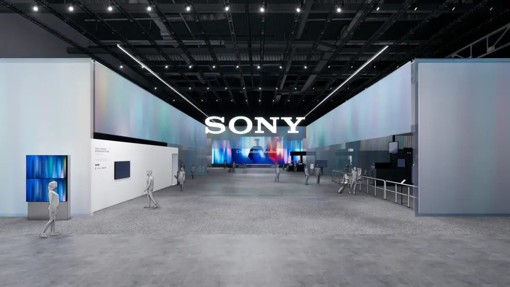
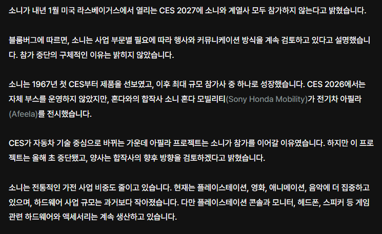

엔비디아 , AI , 칩3 , 중국업체 한테 밀리고 치여서 관심도 못받을거 그냥 참가 포기를 미리 발표해버린듯
플스6라도 나오는거면 그거라도 홍보하겠는데, 가전 테크쪽 트랜드 주도권 자체를 상실해버려서 어쩔수없는듯함
한줄요약 : 67년부터 CES에 참가해온 일본 가전제국 소니 쉼표인가 마침표인가


엔비디아 , AI , 칩3 , 중국업체 한테 밀리고 치여서 관심도 못받을거 그냥 참가 포기를 미리 발표해버린듯
플스6라도 나오는거면 그거라도 홍보하겠는데, 가전 테크쪽 트랜드 주도권 자체를 상실해버려서 어쩔수없는듯함
한줄요약 : 67년부터 CES에 참가해온 일본 가전제국 소니 쉼표인가 마침표인가
병신새끼들
소니는 이제 금융회사입니다!!
영화회사아님?
소니는 플스랑 카메라 제외하면 뭘 하는 회산지도 모르겠음
플스랑 카메라 회사임
이미지센서 잘함
할리우드 5대 영화 스튜디오 중 하나인 소니 픽쳐스
세계 3대 음반사 중 하나인 소니 뮤직 엔터테인먼트
놀랍게도 주요 수입원으로 따지면 소니는 게임&엔터사임
FGO
스파이더맨도 소니꺼임
헤드셋?
CES 2027 사전신청 완료 생애 처음으로 가니까
신기하고 재미있는거 많이 나왔으면 ㅠ
지팔지꼰
보여줄게 그리없나...
CES 소니 부스는 2020년대 들어서 볼 게 없어서 있으나 없으나 의미가 없음.
쟤네 가전제품이나 전자제품이 없잖아
도망가는거냐 니혼진!
금융 부동산 회사라서 이상할거도 없다
ps6 발표 하라고..!!!
예네 어차피 콘텐츠, B2B 부품, 등 가전말고 다른걸로 돈 존나 범.
21세기 들어서 체질개선으로 내리막에서 떡상한 제일 모범사례중 하나가 소니임.
갈 필요 없어서 안가는거임 못가는게 이니라
이미지 센서로 알차게 벌잖아. 그럼 됐지!
삼성엘지도 조만간임
삼성엘지 아직 경쟁력 있음
아직인게 문제지
CES는 직전년도 참가 기업한테 자리우선선택권 주는거 없나?
그거때문에라도 그냥 관성적으로 참가하는 기업 많을텐데
한번 빠지면 명당자리 반납이라
ces는 장기간 작별일듯
ces는 거의 모든기업에 roi안나오는 행사가 된듯.
이미지 센서 잘하니까 뭐 ai, 로봇 발전 할수록 이 쪽으로 돈 벌겠지 종합 가전기업 타이틀은 버려졌지만
80년대 개발한 이미지 센서로 지금까지 잘 먹고 살고있는 회사. 그때 마비카 개발해서 상용화 시키며 기술 발전시켜온게 소니에겐 신의 한수임. 센서 아니었으면 진즉에 망하거나 계열사 오체분시되며 흡수 당했어도 전혀 이상하지 않았을 회사..
바이오도 없고, 티비도 없고 내놓을만한건 PS6인데 굳이 게임이 메인이 아닌 곳에서 홍보할 것도 아니고.. 체질 변경이 완료 된 것으로 봐야지..
스파이더맨3 발매 하라고
전설의 쏘니 1군만 있었어도...!
솔직히 플스 말고 소니제품 살게 뭐있어
헤드폰 이쁘더라
ps6,gta6 넘버링 딱맞춰서 시연영상 보여주면 가슴이 웅장해질텐데 아쉽구만
소니는 사실상 가전제품보다는 이제는 엔터산업 기업이지
나 듣기로는
일본 잘나갔던 기업들은 이제 거의 투자같은 걸로 돈벌고 있는 걸로 앎.
근데 그 실적이 또 엄청나서 나라 자체는 예전보다 더 부자가 된 게 맞는데,
문제는 회사랑 나라만 부자인거고 서민한텐 그 투자금이 내려올 일이 없으니까
서민만 가난한 그런 이상한 나라라고 들었던 거 같음
인존버즈2 내달라고 빨리
보여줄 수 있는 건, 인상된 가격표 입니다.